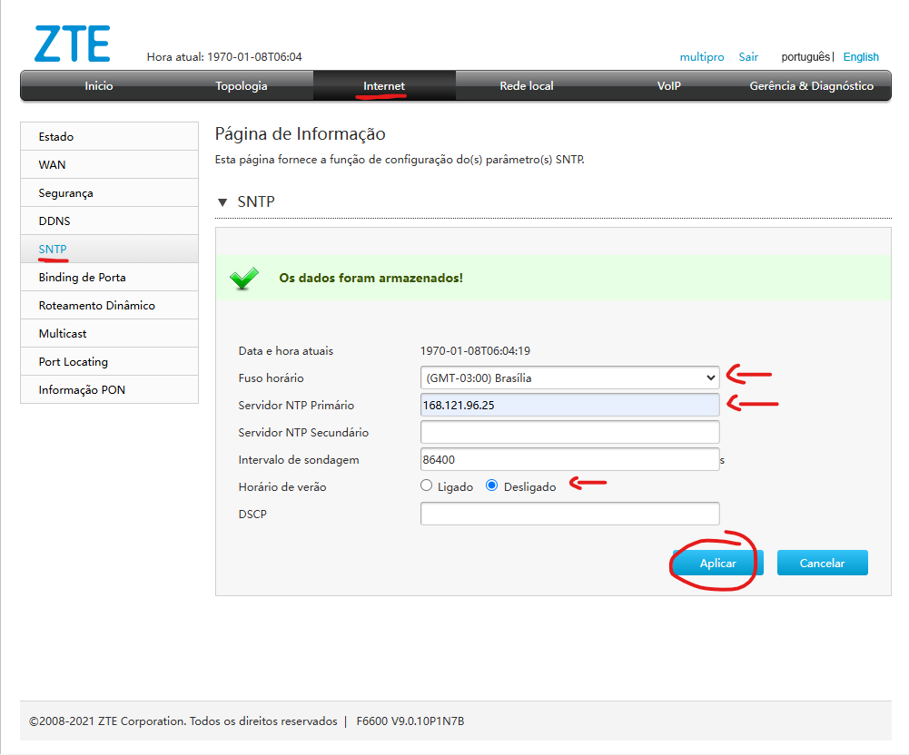
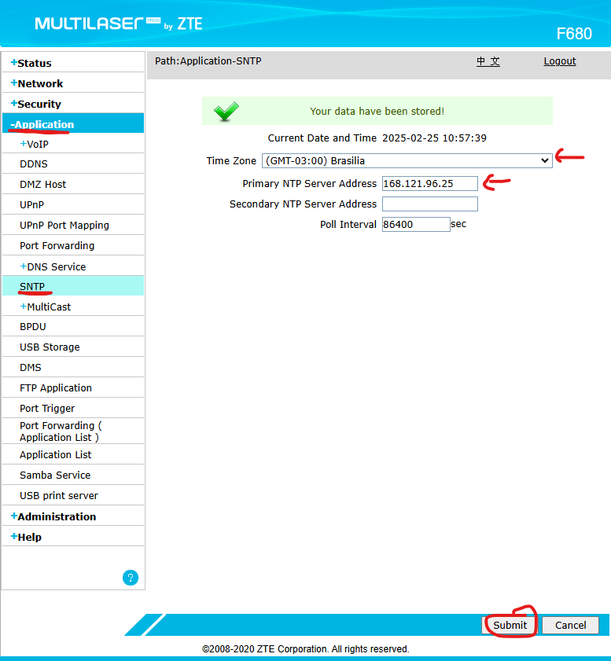

Configuração SNTP - CAT | TrixNet
Oque é SNTP ?
SNTP (Simple Network Time Protocol) é um protocolo simplificado para sincronização de horário em redes de computadores.
Passo a passo de como configurar SNTP F6600 (Interface cinza)
Para acessar o SNTP na ONU cinza, segue abaixo:
Passo a passo de como configurar SNTP F680 (Interface azul)
Para acessar o SNTP na ONU azul, segue abaixo:
⚠️ Importante
Sempre configurar horario de brasilia, desativar horario de verão e colocar o IP SNTP do provedor:
SNTP: 168.121.96.25